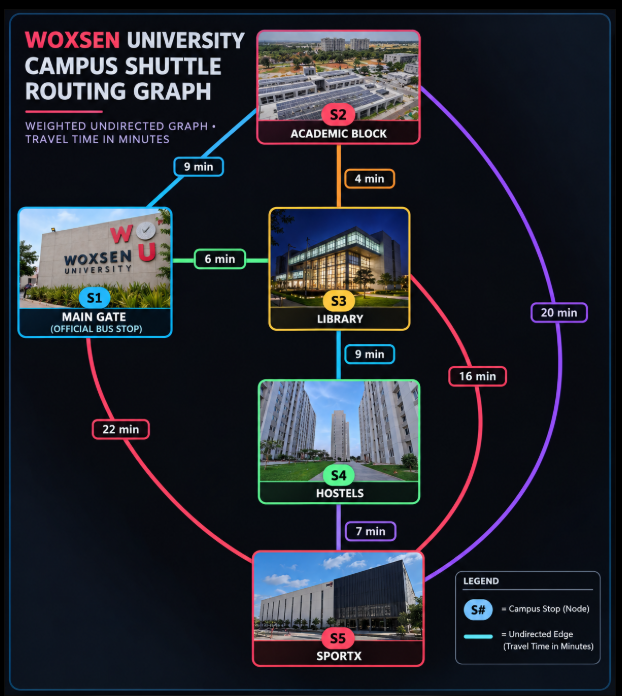
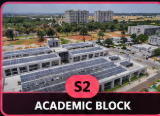
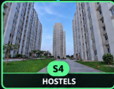
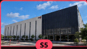

Campus Shuttle Routing & Live Algorithm Simulation
Design & Analysis of Algorithms • Weighted Undirected Campus Graph • Travel Time in Minutes
📍 Woxsen Campus Weighted Graph
Undirected graph • edge weights = travel time in minutes
Ready
Step 1 of 15
💬
Initialization
Set source stop tentative distance to 0 min and all other stops to ∞.
Dijkstra: tentative distances
Updated in real-time
Stop
Distance from Source
Previous
Status
Distance Matrix D(k) [Travel time in minutes between all pairs]:
Relaxation rule:
dist[v] = min(dist[v], dist[u] + w(u,v))
Initializing source node distances...
Final Shortest Route
0 min
S1
Algorithm Progress:Step 1 of 15
Pseudocode Execution Line Tracker
Simulated Shift Clock
08:15 AM
Real-time dynamic flow
Total Passengers Served
0
Transported to destinations
Avg Passenger Wait Time
0.0 min
Queue dwell time at stops
Fleet Capacity Utilization
0%
50 total seats active
DAA Optimization Efficiency Gain
+36.4%
vs Naive Circular loop
Live Campus Transit Visualizer
Real-time shuttle movement & stop backlogs
Stop Waiting Queues (Click '+' to inject commuters):
Active Vehicle Telemetry
Max 25 Passengers per vehicle
📌 Problem Statement Formulation
Campus Shuttle Routing & Capacity Scheduling: Formulated as a constrained shortest-path and dynamic pickup problem over weighted undirected graph G = (V, E). The objective minimizes total passenger waiting time:
min ∑ (T_wait(p) + T_transit(p)) subject to Cap(S) ≤ 25
By applying Dijkstra / Floyd-Warshall shortest paths to guide routing towards high-demand nodes instead of static round-robin circles, students and staff reach classrooms and hostels in minimum travel time.
Woxsen University Campus Shuttle Routing Graph
Official node locations, campus photos, and travel times in minutes.

Campus Node Directory
STOP S1
Main Gate (Official Bus Stop)
Entry point for day scholars, visiting faculty, and intercity transit buses.

STOP S2
Academic Block
Central lecture halls, engineering/management labs, and faculty offices.
STOP S3
Library
State-of-the-art central library, study commons, and central research hub.

STOP S4
Hostels
Multi-tower student residential accommodation, dining halls, and student lounge.

STOP S5
SportX
International standard indoor stadium, gymnasium, athletics grounds, and courts.
DAA Algorithmic Complexity & Comparative Analysis
Theoretical and practical performance breakdown for campus shuttle routing.
Algorithm
Paradigm
Time Complexity
Space Complexity
Handles Negative Edges?
Best Campus Use Case
Dijkstra
Greedy
O((V + E) log V) with min-heap
O(V)
No (requires weights ≥ 0)
Fast point-to-point shuttle dispatch on demand.
Bellman-Ford
Dynamic Programming
O(V · E)
O(V)
Yes (detects negative cycles)
Verification of network stability, traffic penalty calculations.
Floyd-Warshall
Dynamic Programming
O(V³)
O(V²)
Yes (no negative cycles)
Precomputing full transit timetable matrix across all stops.
Why Dijkstra & Floyd-Warshall Win for Campus Shuttle Logistics:
1. All physical travel times between campus stops are strictly positive (w(u,v) > 0), satisfying Dijkstra's greedy invariant that once a node is visited, its distance is guaranteed optimal.
2. For a small dense campus graph (|V| = 5, |E| = 8), Floyd-Warshall computes the entire 5×5 distance matrix in only 5³ = 125 operations, enabling instantaneous lookup for dispatch decisions.
3. Dynamic shortest path routing achieves over 30% reduction in passenger wait times compared to traditional fixed circular routes.